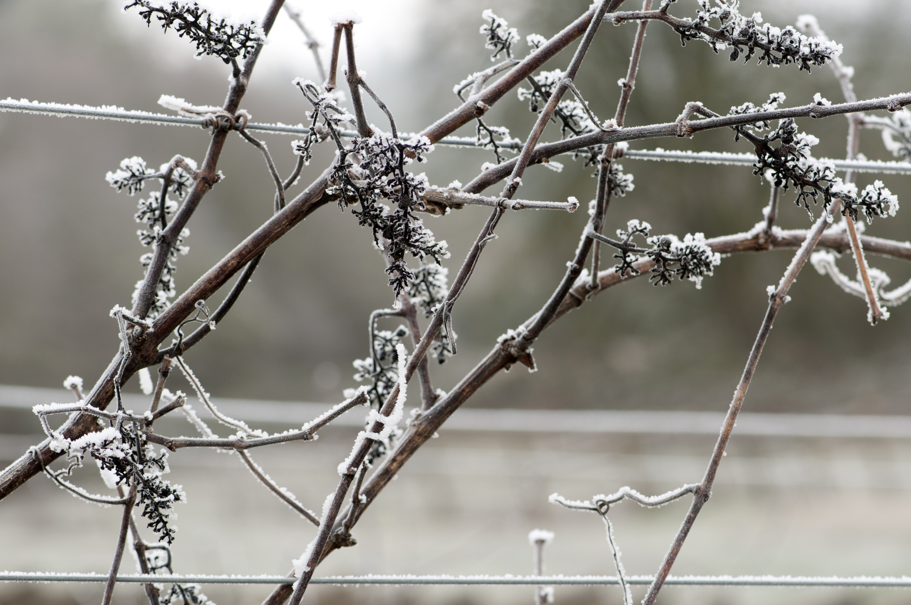
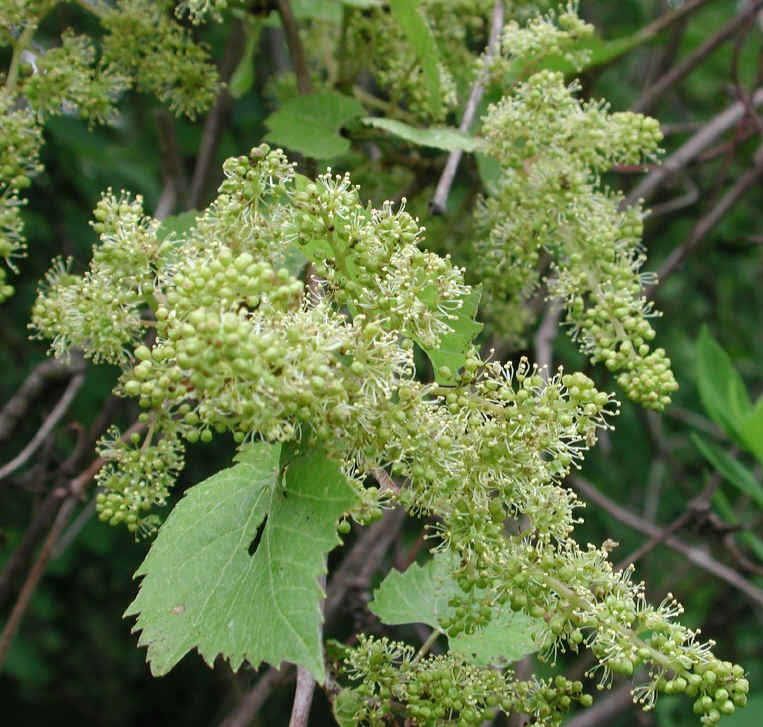

Winter
Dormancy: From leaf fall to the beginning of growth in spring, grapevines are dormant and consist entirely of woody tissue. Relatively little activity occurs during this period.

April
Bud Break: The first tender buds of the growing season emerge from the dormant vine during bud break. It is the first stage of the vine cycle that yields grapes each fall.

May
Flower Emergence: Inflorescences begin to swell, and the buds begin to open. They are extremely fragile in this stage.

June
Flowering: Grapevines bear greenish flower clusters, so small that they are hardly noticeable.